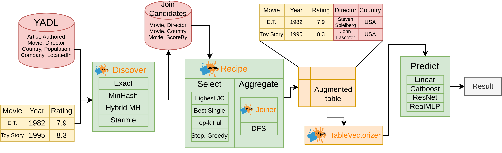

A Skrub use case in academia
Riccardo Cappuzzo
Inria
2025-01-29
Plan for the presentation
- Context and explanation of the problem
- The Retrieve, Merge, Predict pipeline
- How is this relevant?
Riddle me this…
I have a table I want to train a model on. I also have access to a large collection of tables.
How do I combine the two to train a better model?
Example: augmenting tables
Example: augmenting tables
Example: augmenting tables
Example: augmenting tables
Some definitions
- Base table: the table we want to augment (“Movies”, “Housing”…)
- Query column: a column that should be used as join key (“Movie title”, “Address”…)
- Data lake: an unstructured repository of many (thousands of…) “candidate tables”
- Candidate table: a table that may be useful for augmenting the base table (“Movie directors”…)
- Candidate column: a column in a candidate table that could be joined on the query column (“Title” in a table about filmographies)
- Augmented table: the result of joining the base table and a candidate table
Warning
This terminology is slightly different from that used in the Skrub documentation
Jaccard Containment
- Jaccard Similarity: \(\frac{|Q \cap X|}{|Q \cup X|}\)
- Jaccard Containment: \(\frac{|Q \cap X|}{|Q|}\)
Jaccard containment is a “normalized” intersection:
Important
What fraction of of query set Q is in candidate column X?

The focus of the study:
- Find the best way to discover candidates.
- Work within a defined computational budget
- Work with exact joins between a base table and multiple join candidates.
- Guarantee that results are reproducible.
We do not consider:
- Entity matching or fuzzy joins (e.g., matching “NYT” and “The New York Times”).
- Discovering the query column.
- Multi-key joins
Working with data lakes is hard
- Some CSVs don’t use commas
- Some CSVs have no (known) schema
- Some CSVs aren’t CSVs, they’re actually JSON files in disguise
- Some JSONs aren’t JSONs, they’re actually strings in disguise
If you don’t know the tables, everyone is sus
Retrieve, Merge, Predict
Pipeline schema
Candidate retrieval
- Exact Matching: measure the exact Jaccard containment (JC) for each column in the data lake.
- MinHash: estimate the Jaccard containment, query to get columns with a JC larger than a threshold.
- Hybrid MinHash: query with MinHash, then measure the exact JC for the retrieved candidates.
- Starmie : use a language model to query candidate columns.
Candidate selection
- Highest Containment Join: Rank candidates by Jaccard Containment.
- Full Join: Join all candidates.
- Best Single Join: Train a model on each candidate, select the best.
- Stepwise Greedy Join: Like Best Single Join, but keep all good candidates.
Aggregation
Aggregation
- Any: take one value at random from each group
- Mean: for each group, take the mean of numerical values and mode of categorical values
- Deep Feature Synthesis (DFS): greedily generate new features (count, mean, sum…) to already present features.
Prediction
- RidgeCV: linear baseline üìà
- CatBoost: GDBT üå≤
- ResNet: Neural Networks ü߆
- RealMLP: Neural Networks ü߆
Some experimental results
Total compute time
| ML Model | Platform | Total compute time |
|---|---|---|
| RidgeCV | CPU | 4y 3m 10d 7h |
| CatBoost | CPU | 1y 3m 29d 21h |
| ResNet | GPU | 5y 6m 23d 0h |
| RealMLP | GPU | 10y 7m 23d 3h |
| Total | Both | 21y 9m 26d 8h |
What does this have to do with Skrub?
“Features” of research code
Research code…
- Is mostly custom-made for a specific experiment
- Features little to no testing
- Often is poorly documented, or not at all
- Involves a lot of technical debt
Skrub to the rescue
- Well tested code
- Good documentation
- Features cover much of the pipeline
Using Skrub features in the pipeline
- The
Discoverobject can replace (part of) the retrieval step. - All the code for joining can be replaced by the
AggJoinerorMultiAggJoiner. - The
MultiAggJoineris an additional baseline. - The
TableVectorizercan handle automated preprocessing of the tables. - Joined candidates can be examined quickly using the
TableReport.
“Skrubified” pipeline
“Skrubified” pipeline
Example with MultiAggJoiner
merged = source_table.clone()
hashes = []
for hash_, mdata in tqdm(
index_cand.items(),
total=len(index_cand),
leave=False,
desc="Full Join",
position=2,
):
cnd_md = mdata.candidate_metadata
hashes.append(cnd_md["hash"])
candidate_table = pl.read_parquet(cnd_md["full_path"])
left_on = mdata.left_on
right_on = mdata.right_on
aggr_right = aggregate_table(
candidate_table, right_on, aggregation_method=aggregation
)
merged = execute_join(
merged,
aggr_right,
left_on=left_on,
right_on=right_on,
how="left",
suffix="_" + hash_[:10],
)Wrapping up
Repositories
Acknowledgements


Authors:
- Riccardo Cappuzzo (SODA, Dataiku)
- Aimee Coelho (Dataiku)
- Felix Lefebvre (SODA)
- Paolo Papotti (Eurecom)
- Gael Varoquaux (SODA)
Conclusions and summary
- Tree-based models are more effective and more resilient than the alternatives
- Good table retrieval affects the whole pipeline
- Simple methods produce results comparable or even better than more complex methods
- Skrub provides well-tested, well-documented code
- Skrub objects provide features that cover most of the pipeline
- In return, the pipeline helped deciding on relevant features.

https://github.com/skrub-data/skrub